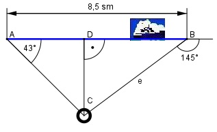

>Aufgabe 121 Wie groß ist der Abstand e des Schiffes nach den angegebenen Peilungen vom Leuchtturm?

Im Dreieck ACD: CD tan 43° = ---- | *AD AD CD = AD * tan 43° Im Dreieck CBD: Winkel bei B = 180° - 145° = 35° CD tan 35° = ---------- | *(8,5 – AD) 8,5 - AD CD = (8,5 – AD) * tan 35° Gleichgesetzt: AD * tan 43° = (8,5 – AD) * tan 35° AD*tan 43° = 8,5*tan 35° - AD*tan 35° |+AD*tan 35° AD * tan 43° + AD * tan 35° = 8,5 * tan 35° AD * (tan 43° + tan 35°) = = 8,5 * tan 35° |:(tan 43° + tan 35°) 8,5 * tan 35° 8,5 sm * 0,7002 AD = ------------------- = ------------------- = tan 43° + tan 35° 0,9325 + 0,7002 = 3,65 sm BD = 8,5 sm – AD 0 8,5 sm – 3,65 sm = 4,85 sm Im Dreieck CBD: BD cos 35° = ----- |*e e e * cos 35° = BD |:cos 35° BD 4,85 sm e = ---------- = --------- = 5,9 sm cos 35° 0,8192